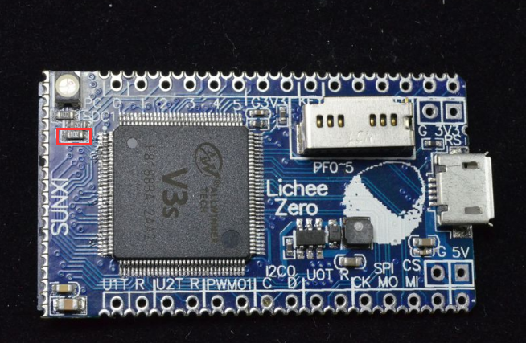
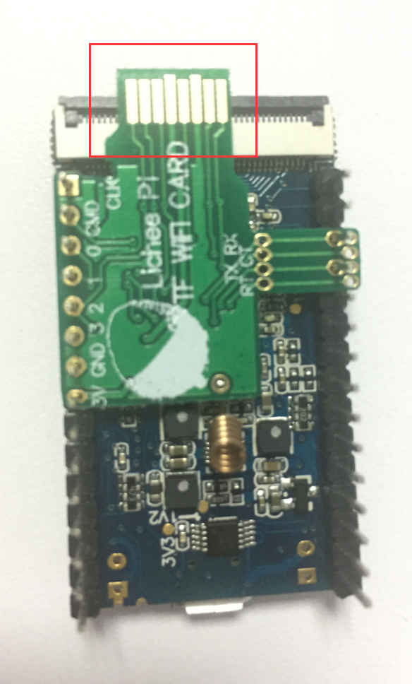
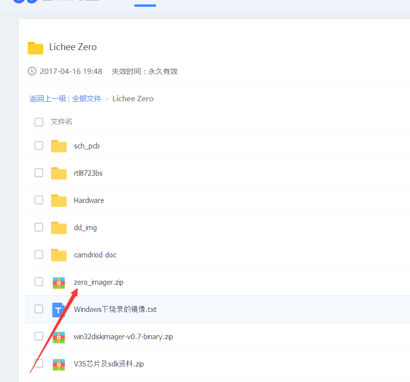
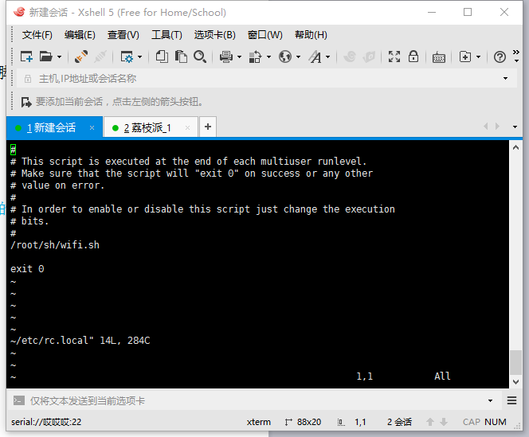

TF WIFI 小白编
材料
荔枝派Zero开发板TF WiFi模块
旧版的首先要把这电阻去了

焊接
- 要把wifi模块与zero正确连接(我用的是焊接于底部)
- 堆叠焊接于底部
- 堆叠焊于底部，可使散热情况优于前者，但需要注意两点:
- 下图红圈处需要剪断，否则无法插屏幕
- 天线要弯过来，或者重新焊接到背面。

下载驱动
从网盘里下载r8723bs.ko驱动
网盘资料：链接: https://pan.baidu.com/s/1nv7Fq2X
>>>
（建议在下载完后改名字，因为，这个名字里面有空格,因为空格有转义符,很容易搞错，打TAB比较方便，但是在写自启脚本时TAB却是空格，所以，，，你懂的(・∀・)）注:名字一定要以.ko结尾
WiFi使用方法
加载驱动并启用WiFi
在命令行里执行
insmod r8723bs.ko
sudo ifconfig wlan0 up
启动好之后把联网脚本设为可执行文件
chmod 777 connect_wx.sh
输入下面命令编辑无线配置文件
vi /etc/wpa_supplicant.conf
然后将里面的下面部分删除
network={
}
然后保存修改，接着输入如下命令生成新的无线网络配置文件
wpa_passphrase 无线网络名称 无线密码 >> /etc/wpa_supplicant.conf
然后就成了，接着输入
./connect_wx.sh
看看是否成功连网，和ip地址
成功加载驱动却没有wlan0
在命令行里执行
mount /dev/mmcblk0p1 /mnt/
cat /mnt/boot.scr
然后就会看到这个
'V·z?Xցܣ]Mڳetenv bootargs console=ttyS0,115200 panic=5 console=tty0 rootwait root=/dev/mmcblk0p2 earlyprintk rw
load mmc 0:1 0x41000000 zImage
load mmc 0:1 0x41800000 sun8i-v3s-licheepi-zero-ctc.dtb <--这里使用了错误的dtb
bootz 0x41000000 - 0x4180000
从网盘中获取正确的dtb来覆盖，具有wifi功能的dtb是
sun8i-v3s-licheepi-zero-dock.dtb （在网盘的zero_imager里面）
或者不用改。。把系统卡在电脑上读，在电脑里面改也行
zero_imager 里面有正确的boot.scr直接在电脑里面换上去就行了再把
sun8i-v3s-licheepi-zero-dock.dtb 复制到root目录

开机自动连网
首先写一个shell脚本来加载驱动,启动wlan0，运行连网脚本，放在任意目录都可以，输入命令：
vi wifi.sh
然后按a进入插入模式,输入:
#!/bin/sh
insmod /root(你放WiFi驱动的路径)/wifi.ko(WiFi驱动的名字)
ifconfig wlan0 up
/root/connect_wx.sh
写好后按下esc，再输入： wq
保存数据后输入: chmod 777 wifi.sh
然后添加开机启动脚本 vi /etc/rc.local
会显示这个

然后把你的wifi自启脚本以绝对路径形式输入 exit 0 上面的一行中，如果路径太长,一行写不完，就在这一行的最后面输入然后按下enter键